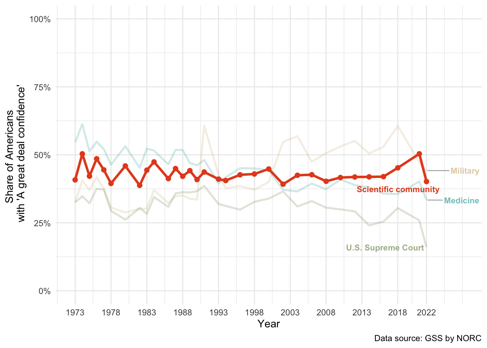
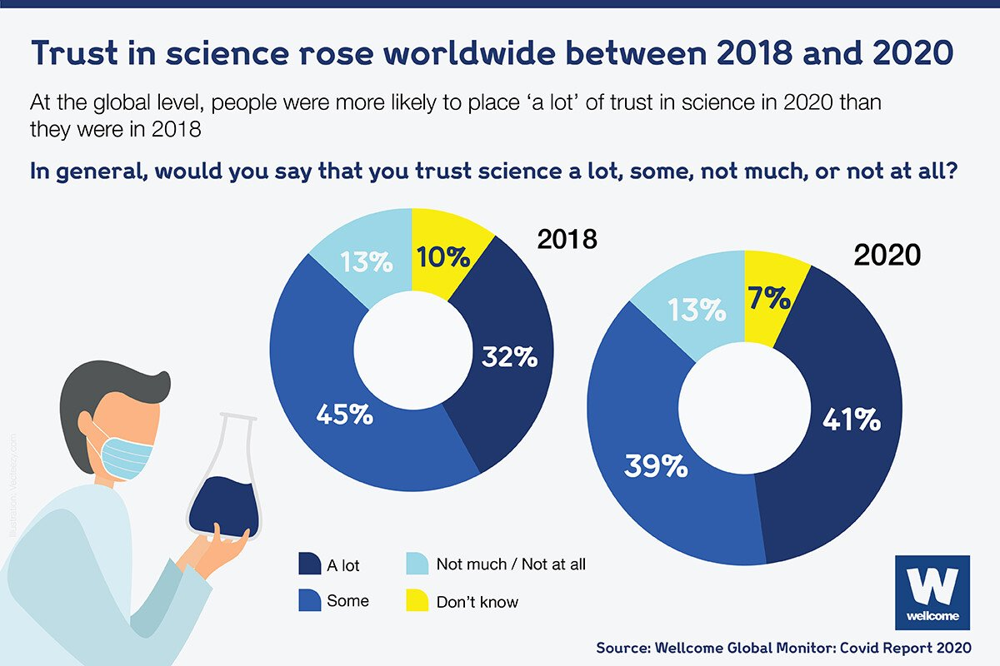

2 Introduction
2.1 Trust in science matters
Numerous studies have demonstrated that individuals with higher levels of trust in science are more likely to engage in pro-environmental behavior, support climate policies, and accept the scientific consensus on global warming (Cologna and Siegrist 2020; Hornsey et al. 2016; Bogert et al. 2024).
Trust in science has also been shown to be positively associated with willingness to get vaccinated, both in a Covid-19 context (Lindholt et al. 2021) and beyond (Sturgis, Brunton-Smith, and Jackson 2021).
During the pandemic, a panel study in 12 countries found that trust in scientists was the strongest predictor of whether people followed public health guidelines, such as mask-wearing or social distancing (Algan et al. 2021). Similar results have been found by other studies, e.g. positive effects of trust in science on acceptance of social distancing in the US (Koetke, Schumann, and Porter 2021).
In short, trust in science matters, because it is related to several more specific and desirable attitudes, beliefs and behaviors.
2.2 What is trust in science?
What exactly is trust in science? Answering this question is challenging, because trust in science involves many subtleties than can be grouped into two broad categories: subjective representation and domain-specificity. First, any general definition of trust in science necessarily glosses over variation in the public’s representation of science: The term science can mean different things to different individuals or groups. It can be seen, for example, as a body of literature, an institution, a method, or certain individual scientists (Gauchat 2011). This diversity of possible representations can have consequences on people’s reported trust in science. For instance, it has been shown that people tend to trust scientific methods more than scientific institutions—particularly among less-educated segments of the population (Achterberg, De Koster, and Van Der Waal 2017).
Second, trust is, at least to some extent, domain-specific. Domains can be, for example, scientific disciplines. In the US, people trust some disciplines, such as biology or physics, considerably more than others, such as economics or sociology (Altenmüller, Wingen, and Schulte 2024; Gligorić, Kleef, and Rutjens 2024; Gauchat and Andrews 2018).
Domains can also be particular pieces of knowledge. For certain contentious science topics, general trust can be a poor indicator of acceptance of scientific knowledge. For example, in 2014, 41.9% of Americans had a great deal of confidence in the scientific community, according to the US General Social Survey (GSS)1. A Pew study run in the same year found that 88% of a representative sample of scientists connected to the American Association for the Advancement of Science (AAAS) believed that it was safe to eat genetically modified foods–but only 37% of Americans shared that belief (Rainie and Funk 2015).
Domains can also be character traits of scientists. In social psychology, a popular model suggests that people evaluate others along two fundamental dimensions: competence and warmth (Cuddy, Fiske, and Glick 2008). Similarly, for trust in scientists, researchers have distinguished between an epistemological and an ethical dimension (Wilholt 2013; Intemann 2023). Sometimes, researchers make more fine-grained distinctions: For example, Hendriks, Kienhues, and Bromme (2015) have argued for three dimensions: expertise/competence, integrity, and benevolence. Besley, Lee, and Pressgrove (2021) has suggested openness as an additional fourth dimension. Across these dimensions, competence is typically the one on which scientists score highest in the perception of the public. A recent Pew survey found that 89% of Americans viewed research scientists as intelligent, but only 65% viewed them as honest, and only 45% described research scientists as good communicators (Kennedy and Brian 2024; see also Fiske and Dupree 2014). Beyond the US, a recent study confirmed this tendency on a global scale (Cologna et al. 2025): People perceived scientists as highly competent, with 78% tending to believe that scientists are qualified to conduct high-impact research. By contrast, people held scientists in lower esteem with regards to their integrity and benevolence: Only 57% of people tended to believe that most scientists are honest, and only 56% tended to believe that most scientists are concerned about people’s well-being.
Finally, domains can also be areas of legitimacy. The fact that people tend to evaluate scientists in particular as competent already suggests that they see scientists as legitimate in their role of knowledge producers. However, this legitimacy does not necessarily extent to other roles, in particular as policy advocates: According to the just before mentioned Pew survey, only 43% of Americans think scientists are usually better than other people at making good policy decisions on scientific issues (Kennedy and Brian 2024). However, the evidence on the public opinion about scientists in the role of policy advocates is not conclusive: A recent global study found that people tend to agree that scientists should engage with society and be involved in policymaking (Cologna et al. 2025). In the context of climate science, Cologna et al. (2021) found that in the US, and Germany, people support policy advocacy by climate researchers and expect greater political engagement of the scientists.
Although trust in science can be domain-specific and depends on one’s subjective representation of science, empirically, general trust in science appears to be a meaningful concept. First, while index measures of trustworthiness with different dimensions (e.g., competence, benevolence etc.), are preferable to direct, single-item measures of general trust (Besley and Tiffany 2023), such as the Pew research centers’ question “how much confidence, if any, do you have in scientists to act in the best interests of the public?”, in their recent global study on trust in science, Cologna et al. (2025) report that the Pew’s single item question was highly correlated with an index measure based on several trustworthiness dimensions. Second, as reviewed earlier, general trust in science, whether based on a single-item or an index measure, appears to be a relevant predictor of other more tangible outcomes, from vaccine intentions to beliefs about climate change.
A widely agreed-upon definition of trust is the willingness to be vulnerable to another party–whether an individual, a group, or an institution (Mayer, Davis, and Schoorman 1995; Rousseau et al. 1998). Here, I adopt a definition that builds on this idea, by defining trust in science as “one’s willingness to rely on science and scientists (as representatives of the system) despite having a bounded understanding of science” (Wintterlin et al. 2022, 2).
To which extent do people rely on science and scientists? And why? In the following section, I show that despite a research focus on distrust, most people do tend to trust science. However, I will argue that the classic normative reason on why people should trust science–namely understanding and knowledge of science–is not likely to be the main explanation.
2.3 The puzzle of trust in science
2.3.1 People tend to trust science
On the whole, people across the world tend to trust science: A recent large survey in 68 countries found trust in scientists to be “moderately high” across all countries (mean = 3.62; sd= 0.70; Scale: 1 = very low, 2 = somewhat low, 3 = neither high nor low, 4 = somewhat high, 5 = very high), with not a single country below midpoint trust (Cologna et al. 2025).
In the US, where long term data is available from the US General Social Survey (GSS), this public trust appears to be both remarkably stable and elevated relative to other institutions (Funk and Kennedy 2020; Funk et al. 2020; Smith and Son 2013): From the early 1970s to 2022, the currently latest year available in the GSS, on average 40% of Americans say they have a great deal of confidence in the scientific community (see Figure 2.1). This is the second highest score (just behind the military) among 13 institutions listed in the GSS, including, e.g., the government, press, organized religion or medicine. Note, however, that very recently, polls suggest a drop in trust in science in the US (Lupia et al. 2024).
Global data on trust in science across time is sparse. Yet, the available data suggests, if anything, a recent increase of trust in science: In 2018, the Wellcome Global Monitor (WGM) surveyed of over 140000 people in over 140 countries on trust in science (Wellcome Global Monitor 2018). In 2020, during the first year of the Covid pandemic and before vaccines were widely available, a follow-up survey was run in 113 countries, involving 119000 participants (Wellcome Global Monitor 2020). Between these two surveys, on average, trust in science has risen (Wellcome Global Monitor 2021): In 2020, 41% (32% in 2018) of respondents said they trust science a lot, 39% (45% in 2018) said they trust science to some extent, 13% (also 13% in 2018) said they trust science “not much or not at all”, and 7% (10% in 2018) answered “don’t know” (Figure 2.2).

2.3.2 Why should we trust science?
According to some classical views in epistemology, trust should in fact play no role in science: In a way, the whole point of science is to “know the truth instead of just trusting what you are told” (Hendriks, Kienhues, and Bromme 2016). Some early scholars, e.g. John Locke, saw the “uncritical acceptance of the claims of others […] as a failure to meet rationality requirements imposed on genuine knowledge” (Sperber et al. 2010, 361). This perspective is best understood historically, as an argument against defiance to authority (Sperber et al. 2010). However, this ideal of the individual as a radically skeptical, self-reliant reasoner is at odds with reality. Most objects of scientific study are impossible for the public to observe and judge for themselves (e.g., atoms, genes). And even scientists fundamentally need to trust each other: Modern science is deeply collaborative and specialized, to the extent that no individual scientist independently verifies all the claims they rely on. This is not only true for empirical science–even in mathematics, there are proofs that most mathematicians could not verify for themselves (Hardwig 1991).
Because explicit verification of everything is impossible for any individual, there must be some features to science that make it trustworthy. What are these features? Philosophers and sociologists have long argued over this question (for an overview, see Oreskes 2019). Famously, Karl Popper emphasized the role of the scientific method–the hallmark of which, for him, was falsifiability. Scientific knowledge, in Popper’s view, is trustworthy because it constantly puts itself to test, through bold conjectures and rigorous attempts at refutation (Popper 2002).
Popper’s conception of the scientific method, and more generally the very idea of any singly universal method for trustworthy science, has been widely criticized (Oreskes 2019). Moving beyond a purely method-based view, Robert Merton for example rooted science’s trustworthiness in its institutional norms (Merton 1979). Merton layed out four defining norms of science, while acknowledging that they were often more ideals than empirical descriptions: communism, i.e. findings are shared publicly rather than kept secret or privatized; universalism, i.e. claims are evaluated based on impersonal criteria, not the identity (gender, race, nationality, or status) of the person making them; disinterestedness, i.e. scientists are (ideally) motivated by the pursuit of knowledge, not personal gain; and organized skepticism, i.e. claims are constantly subject to critical scrutiny and testing.
Both Popper and Merton idealized, to some extent, the nature of scientists: Although Popper highlighted the (impersonal) benefits of the (singular, in his view) scientific method, executing this method required heroic individual scientists who make bold predictions and put their own claims to the greatest scrutiny. Merton focuses on a shared ethos of the scientific community, but this implies that individual scientists’ have internalized the common value ideals and are committed to them. By contrast, Strevens (2020) assumes that scientists can be, just like other humans, biased and ideological. However, in science, they ultimately need to convince other scientists by presenting evidence. This, “iron rule of explanation”, in Strevens’ view, is what makes science trustworthy.
This very short and incomplete review of normative perspectives on trust in science is meant to illustrate that even very different accounts on what should make science trustworthy have something in common: Popper, Merton and Strevens highlight different epistemic qualities of science, but they share the underlying assumption that, to (rationally) trust science, one needs to know about these qualities.
2.3.3 People do not know much about science
This premise, that knowledge and understanding of science should lead to trust in–and more generally positive attitudes towards–science, has dominated research on public understanding of science (Bauer, Allum, and Miller 2007). Studies testing the relationship between science knowledge and attitudes have mostly relied on versions of what is known as the “Oxford scale” (Table 2.12) to measure science knowledge–a set of specific true/false or multiple-choice questions about basic science facts.3 As the name suggests, this measure was developed by scholars associated with the University of Oxford in the late 1980s, in collaboration with Jon D. Miller, a pioneer in research on science literacy in the US (Durant, Evans, and Thomas 1989). A version of these items has been used in several large-scale survey projects, including several Eurobarometer surveys, as well as in the National Science Foundation’s (NSF) “Science and Engineering Indicators” surveys in the US (National Academies of Sciences, Engineering, and Medicine 2016). Survey results from the Oxford scale have been taken to showcase a science knowledge deficit among the public. For example, from the first surveys in which they were used, Durant, Evans, and Thomas (1989) (p.11) report that only “34% of Britons and 46% of Americans appeared to know that the Earth goes round the Sun once a year, and just 28% of Britons and 25% of Americans knew that antibiotics are ineffective against viruses”. According to the National Academies of Sciences, Engineering, and Medicine (2016), performance on the Oxford scale items in the US has been “fairly stable across 2 decades” (National Academies of Sciences, Engineering, and Medicine 2016, 51)4.
The results of this research program have been overall sobering-not only because Oxford scale knowledge was rather low in the population, but also because it did not seem to explain much variation in people’s attitudes towards science: In a seminal meta-analysis Allum et al. (2008) found that Oxford scale type science knowledge was only weakly associated with attitudes towards science. Moreover, this weak association only held for general attitudes–for attitudes towards specific contentious science topics (e.g., climate change), the study did not find an association.
| 1 | The center of the Earth is very hot. (True) |
| 2 | The continents on which we live have been moving their locations for millions of years and will continue to move in the future. (True) |
| 3 | Does the Earth go around the Sun, or does the Sun go around the Earth? (Earth around Sun) |
| 4 | How long does it take for the Earth to go around the Sun? (One year)\* |
| 5 | All radioactivity is man-made. (False) |
| 6 | It is the father’s gene that decides whether the baby is a boy or a girl. (True) |
| 7 | Antibiotics kill viruses as well as bacteria. (False) |
| 8 | Electrons are smaller than atoms. (True) |
| 9 | Lasers work by focusing sound waves. (False) |
| 10 | Human beings, as we know them today, developed from earlier species of animals. (True) |
| 11 | The universe began with a huge explosion. (True) |
| *Only asked if previous question was answered correctly. |
The Oxford scale has received various forms of criticism, ranging from minor concerns for being–ironically, in light of the bad performance–too easy to answer (Kahan 2015), to the fundamental critique that it only captures factual recall (Pardo and Calvo 2004; Bauer, Allum, and Miller 2007). In line with the normative literature reviewed here earlier, what should actually matter for trust is a different kind of knowledge, namely an institutional and methodological understanding of how science works.
The literature on science literacy has sought to measure how well people understand science. Even the creators of the Oxford scale were, to some extent, aware of the limitations of using factual knowledge alone(National Academies of Sciences, Engineering, and Medicine 2016). They never intended the Oxford scale items to serve as a comprehensive measure of science literacy. In fact, Durant, Evans, and Thomas (1989) also developed a scale of “understanding of processes of scientific inquiry”–several multiple-choice about the scientific method and basic concepts of probability. Miller (2004) viewed a scientifically literate citizen as someone who has both a “(1) a basic vocabulary of scientific terms and constructs; and (2) a general understanding of the nature of scientific inquiry.” His measure of science literacy included open-ended questions, for example on what people understand as the meaning of scientific study (Miller 1998).
This institutional knowledge and understanding of science has been tested less extensively for its association with attitudes towards science (but see e.g., Weisberg et al. 2021), as was the case for Oxford scale knowledge, likely because understanding via, for instance, open-ended questions is less obviously quantifiable. However, in isolation, results of measures intended to capture an understanding of science have hardly drawn a more positive image of the public’s knowledge of science. Using an index of various measures, Miller (2004) (p. 288) concluded that “approximately 10 percent of US adults qualified as civic scientifically literate in the late 1980s and early 1990s, but this proportion increased to 17 percent in 1999”. Miller described that according to his measure, someone qualifies as scientifically literate if they possess “the level of skill required to read most of the articles in the Tuesday science section of The New York Times, watch and understand most episodes of Nova, or read and understand many of the popular science books sold in bookstores today” (Miller 2004, 288). These low scientific literacy rates stand in sharp contrast to the rather elevated and stable levels of trust in science in the US (Figure 2.1).
More recent data suggest that science literacy in the US may have improved slightly since Miller’s assessment during the early 2000s, but it still remains rather low. Based on results from the 2018 US Science & Engineering Indicators, Scheufele and Krause (2019) (p. 7663) report that “one in three Americans (36%) misunderstood the concept of probability; half of the population (49%) was unable to provide a correct description of a scientific experiment; and three in four (77%) were unable to describe the idea of a scientific study.”
The 2024 US Science & Engineering Indicators, based on data from the Pew Research Center’s American Trends Panel (ATP) from 2020, report that “60% of U.S. adults could correctly note that a control group can be useful in making sense of study results” and that “only half of U.S. adults (50%) could correctly identify a scientific hypothesis” (National Science Board, National Science Foundation 2024, 24). The report also suggests a positive association between people’s knowledge on these two questions and their trust in scientists to act in the best interest of the public5. However, this association appears rather small, given how fundamental these questions are: Among those who accurately responded that assigning a control group is useful, 44% also expressed a great deal of confidence, compared to 32% of those who did not think a control gorup was useful.
The here reviewed evidence on the relatively weak link between knowledge of and attitudes towards science comes with three limitations: First, direct evidence is based mostly on narrow, factual knowledge as measured by the Oxford scale, and not on a broader, institutional understanding of science. Second, the relevant studies have typically assessed attitudes towards science more broadly, rather than trust in science in particular. Third, the evidence is–to a large extent–based on data from the US and, to some extent, Europe. A recent global study addresses these limitations–in particular the second and third–and points towards a similar conclusion: Cologna et al. (2025) tested the relationship between national science literacy scores, based on the Program for International Student Assessment (PISA), and national average trust in scientists for the 68 countries included in their study. They found no statistically significant association.
This is the puzzle of trust in science that I take as a starting point: Why do people, to a large extent, trust science, despite not knowing or understanding much about it?
2.3.4 Existing explanations focus on why people distrust in science
The idea that knowledge about science causes positive science attitudes is best known under the term “deficit model”, because much of the literature attested the public “depressingly low levels of scientific knowledge” that were assumed to be the principle cause of negative attitudes towards science (Sturgis and Allum 2004, 56). The deficit model has been widely criticized for idealizing science: for implying that “to know science is to love it” (Bauer, Allum, and Miller 2007) and for portraying science knowledge as “superior to whatever ‘nonscientific’ or ‘local’ knowledge the public may (also) possess” (Gauchat 2011). The literature has since moved beyond the idea of science knowledge as the sole driver of trust in science.
Researchers have increasingly studied how people’s values, world views, and identities shape their attitudes towards science (Hornsey and Fielding 2017; Lewandowsky and Oberauer 2021). The psychological literature has focused on explaining negative attitudes towards science with motivated reasoning–selecting and interpreting information to match one’s existing beliefs or behaviors (Lewandowsky and Oberauer 2016; Hornsey 2020; Lewandowsky, Gignac, and Oberauer 2013). This research mostly suggests that certain psychological traits, such as a social dominance orientation, or a tendency of engaging in conspiracy thinking, lead people to reject science. Arguments on a general conspiratory thinking style as one of the root causes of science rejection shift the debate, to some extent, from a knowledge deficit to a broader reasoning deficit (Hornsey and Fielding 2017; Rutjens and Većkalov 2022)6.
Motivated reasoning accounts have been popular in light of accumulating evidence in the US for a widening partisan gap regarding trust in science, with Republicans trusting less and Democrats trusting more (Gauchat 2012; Krause et al. 2019; Lee 2021). Contrary to what the deficit model would suggest, some influential work on motivated reasoning has shown that partisan-driven rejection of science does not appear to be the result of a lack of cognitive sophistication: Kahan et al. (2012) have shown that greater science literacy was associated with more polarized beliefs on climate change. Drummond and Fischhoff (2017) have extended these findings to other controversial science topics, namely stem cell research and evolution: they show that both greater science literacy and education are associated with more polarized beliefs on these topics. However, this phenomenon that “people with high reasoning capacity will use that capacity selectively to process information in a manner that protects their own valued beliefs” (Persson et al. 2021, 1), known under the term ‘motivated numeracy’, has largely failed to replicate (Persson et al. 2021; Hutmacher, Reichardt, and Appel 2024; Stagnaro, Tappin, and Rand 2023). Other studies, focusing on the case of climate change, have argued that partisan divides might simply be the result of bayesian information updating, rather than motivated reasoning (Bayes and Druckman 2021; Druckman and McGrath 2019).
Since the Covid-19 pandemic, the role of misinformation in fostering distrust in science has been increasingly studied (National Academies of Sciences 2024; Scheufele and Krause 2019; Druckman 2022). For this literature, by contrast with the deficit model, the problem of trust in science is less a lack of information, and more the abundance of harmful information.
The premise of the deficit model was that people would trust science because of their knowledge and understanding of science. Perhaps in response to this, recent literature in science communication has shifted the focus on source-based evaluations of trust: from science knowledge to perceptions of scientists. This work has established that people evaluate scientists along different dimensions (Intemann 2023), including competence, but also also integrity, benevolence or openness (Hendriks, Kienhues, and Bromme 2015; Besley, Lee, and Pressgrove 2021). This literature suggests that, for enhancing trust in science, the latter, warmth-related (i.e. other than competence) dimensions could be particularly relevant (Fiske and Dupree 2014). The idea is that people already perceive scientists as very competent, but not as very warm, thus offering a greater margin for improvement.
On the whole, the literature on public trust in science focuses not on explaining why people do trust science, but on why they do not, or not enough, and how to foster trust. As reviews of science-society research have noted, the literature has traditionally operated (Bauer, Allum, and Miller 2007), and according to some still has a tendency to operate (Scheufele 2022), in “deficit” paradigms—at times focusing on the public’s lack of scientific knowledge, and at other times on its lack of trust in science.
2.4 The rational impression account of trust in science
The previous section has established that public trust in science is relatively high, but that, contrary to what normative accounts would predict, knowledge and understanding of science do not seem to be very powerful determinants of this trust. Here, I try to make sense of this by taking a cognitive perspective: I develop a ‘rational impression’ account of trust in science, according to which people trust science because they have been impressed by it. This impression of trust persists even after knowledge of the specific content has vanished. The account builds on two basic mechanisms of information evaluation: First, if someone finds out something that is hard-to-know, we tend to be impressed by it, if we deem it true. This impression makes us infer that the person is competent, a crucial component of trustworthiness. However, it is hard or even impossible to recall exactly how we formed this impression. Second, if something is highly consensual, it is likely to be true. This is particularly relevant when people lack relevant background knowledge to evaluate claims for themselves, as is often the case in science. I begin by reviewing existing evidence for this account. Then I present the evidence contributed as part of this thesis.
2.4.1 Existing evidence for the rational impression account
2.4.1.1 The role of competence
As noted earlier, it has been suggested that targeting the perceived warmth of scientists might be particularly fruitful for science communication to enhance public trust, as people already perceive scientists as very competent, but not so much as warm (Fiske and Dupree 2014). This might indeed be an effective strategy for science communication–at the same time, the fact that many people already trust science even without perceiving scientists as particularly warm highlights the central importance of perceived competence in explaining existing public trust in science.
How could people come to view scientists as competent? It seems plausible that most people do not have much first-hand evidence to judge scientists’ character. As for personal contact, there are relatively very few scientists in the world, and most people probably do not know any personally. As for contact via the media, news on science, by contrast, for example, with news on politicians, mostly concern the science, not the scientists. As people only consume very little news in general (Newman et al. 2023), the bulk of exposure to science can be assumed to happen during education.
Taken together, it seems plausible that people make inferences about the trustworthiness of science based on scientific content and that these inferences primarily relate to scientists’ competence. But if this process is supposed to happen mostly during the years of education, how is this compatible with the observation that people, even those who received a science education, do not seem to know much about science?
2.4.1.2 The role of education
The fact that knowledge and understanding of science are only weakly correlated with trust in science is puzzling not least because of the positive effects of education on trust in science: Education, and in particular science education, has been consistently identified as one of the strongest correlates of trust in science (Noy and O’Brien 2019; Wellcome Global Monitor 2018, 2020; but see Cologna et al. 2025 who only find a small positive relationship between tertiary education and trust in science). How to square the strong association with education, and the weak association with knowledge? One interpretation is that, if we assume that education has some causal effect on trust in science, this effect might be driven by something else than a pure transmission of knowledge and understanding (for a similar argument, see Bak 2001). The candidate mechanism I develop here is impression generation: Education exposes students to scientific content. Students might not understand much of it, and potentially recall even less later on; but they might have been impressed by it, to the point that they come to perceive scientists as competent, and thus, everything else equal, as trustworthy. This impression might persist even when specific knowledge vanishes.
2.4.1.3 People’s impressions can be detached from knowledge
We commonly form impressions of the people around us while forgetting the details of how we formed these impressions: If a colleague fixes our computer, we might forget exactly how they fixed it, yet remember that they are good at fixing computers. As an extreme example, patients with severe amnesia can continue to experience emotions linked to events they could not recall (Feinstein, Duff, and Tranel 2010). In the context of science, Liquin and Lombrozo (2022) have shown that while people find some science-related explanations more satisfying than others, this did not predict how well they could recall the explanations shortly after, suggesting that impressions and knowledge formation can be quite detached.
What makes scientific findings impressive? For an information to be impressive, at least two criteria should be met: (i) it is perceived as hard to uncover and (ii) there is reason to believe it is true. By (i), I mean information that most people would have no idea how to find out themselves. In the case of science, this can be mostly taken for granted. For example, most people would probably only be mildly impressed by someone telling them that a given tree has exactly 110201 leaves. Even though obtaining this information implies an exhausting counting effort, everyone in principle knows how to do it. By contrast, finding out that it takes light approximately 100,000 years to travel from one end of the Milky Way to the other is probably impressive to most people, as they would not know how such a distance can be measured. Regarding (ii), I argue that the main relevant cue for the case of science is consensus.
2.4.1.4 People infer accuracy from consensus
In order to make the best of communicated information, animals need to be able to evaluate it, i.e. being able to distinguish inaccurate and harmful from accurate and beneficial information (Maynard-Smith and Harper 2003). It has been argued that humans have evolved a suite of cognitive mechanisms to serve this function (Sperber et al. 2010; Mercier 2020). In particular, we rely on cues of an informant’s trustworthiness, and check the plausibility of an information against our background knowledge.
In the case of science, reliable cues and background information are scarce: As I have argued above, people generally have little first-hand information to evaluate individual scientists’ trustworthiness. People also largely lack relevant background knowledge to evaluate the plausibility of scientific findings. Sometimes, to a certain extent, people might be able to judge the accuracy of scientific findings for themselves, for example when they are exposed to accessible and convincing explanations in school (Read and Marcus-Newhall 1993; Lombrozo 2007; for a review, see Lombrozo 2006). But for most scientific research, people cannot possibly evaluate the quality of the information for themselves, let alone make their own observations (e.g. quantum mechanics, genes).
An additional way to evaluate whether something is true or not is by aggregating opinions. It has been shown that, when no better information is available, people rely on majority heuristics: the more others agree on something, the more likely we are to believe them to be right (Mercier and Morin 2019). Literature on the wisdom of crowds has shown that this inference is often appropriate (see e.g., Hastie and Kameda 2005). In the absence of other reliable cues and background knowledge, inferences from consensus are likely to be given greater weight in a cognitive system of epistemic vigilance. In the case of science, this extra weight should play in favor of science’s perceived trustworthiness: It has been argued that, by contrast with other intellectual enterprises, consensus is the defining trait of science (Collins 2002). Not only do scientists agree on things, but they agree on impressive things–things that would be impossible for any individual to ever uncover for themselves.
There is some suggestive evidence that people infer accuracy from consensus in the case of science. Research has demonstrated ‘consensus gaps’ for many science topics: gaps between the scientific consensus and public opinion (Rainie and Funk 2015). Some of the most worrying consensus gaps relate to climate change, as substantial segments of the population disagree with scientists on what is happening and what to do about it (e.g., Egan and Mullin 2017). According to a popular psychological model, the “gateway model”, informing people about the scientific consensus on specific issues acts as a gateway to change their beliefs on these issues (Linden 2021). Studies have demonstrated the effectiveness of consensus messaging in changing people’s beliefs on contentious science topics such as climate change (Većkalov et al. 2024) or vaccination (Salmon et al. 2015; for an overview of results on vaccination, climate change, and genetically modified food, see Van Stekelenburg et al. 2022). This evidence is only suggestive, because because the fact that consensus changes people’s beliefs or attitudes does not necessarily require an inference of accuracy. An alternative explanation, for example, is normative conformity-that is, when people follow the majority because of social pressure rather than a belief that the majority is correct (Mercier and Morin 2019).7 The literature on consensus messaging also does not provide evidence on whether learning about scientific consensus changes not only beliefs on specific science topics, but also increases trust in science more generally.
2.4.2 Novel evidence for the rational impression account
2.4.2.1 People (in the UK) trust but forget impressive science
Existing evidence suggests that impressions can be detached from remembering specific content. However, to the best of my knowledge, it has not yet been tested whether exposure to impressive science increases trustworthiness, and whether this process requires or not an ability of being able to recall the content that generated these impressions. In Chapter 3, we provide such a test. We found that reading about impressive scientific findings in the disciplines of archaeology and entomology increased participants’ perceptions of both the scientists’ competence and the trustworthiness of their discipline. At the same time, participants forgot almost immediately about the specific content that generated these impressions.
In these experiments, participants had reason to trust the information they saw for two reasons. First, while we did not provide explicit cues on consensus, the scientific findings were implicitly formulated as consensual (e.g. “Archaeologists are able to tell…”). This probably matches people’s priors on science, as the bulk of people’s exposure to science is likely to happen during education, and schoolbook science knowledge is typically highly consensual. Second, as illustrated above, people already believe scientists to be competent, and this general prior is likely to extend to archaeologists and entomologists.
2.4.2.2 People (in the UK) infer both accuracy and competence from consensus
To test whether people infer accuracy and competence purely from consensus, in Chapter 4, we used non-science related experimental scenarios.
Participants were presented with answers by fictional individuals–the informants–on problems they knew nothing about other than the broad context (e.g., results of a game, or stock market predictions). While this created a slightly artificial experimental setting, it allowed us to ensure that participants did not have any priors, by contrast with previous studies, in which participants often had cues on the informants’ competence. Participants were asked to judge the accuracy and competence of informants. We manipulated convergence, i.e. the extent to which different informants agreed on something, the most extreme form of which was consensus, where all informants agreed on exactly the same answer. Our experiments showed that, in the absence of any priors, participants indeed inferred accuracy from convergence; more than that, participants even inferred competence.
Are these inferences sound? The literature on the wisdom of crowds does not provide normative grounds that would justify these inferences: First, part of the beauty of wisdom of crowds phenomena is that they do not require much individual competence. For example, in the case of averaging, what defines the wisdom of the crowd is that the average opinion of a set of individuals is, in a wide range of circumstances, more likely to be accurate than that of a single individual (e.g. Larrick and Soll 2006). Second, a minimum of competence is sometimes posited as a requirement for some wisdom of the crowd effects to emerge. That is the case, for example, in the Condorcet Jury Theorem, where jurors need to be at least slightly better than chance for the majority decision to be correct (De Condorcet 2014).
To fill this gap, in Chapter 4, we present analytical arguments and simulations which suggest that inferences from convergence to both accuracy and competence are in fact sound, under a wide range of circumstances–assuming that informants are independent and unbiased. If truly rational, these inferences should not be general behavioral rules; they should be sensitive to contextual information and only work well within these boundary conditions. In line with that, our experiments show that inferences from convergence were weakened when participants were given reason to believe that the informants were biased by a conflict of interest.
2.4.2.3 People (in France) tend to trust scientists more when they perceive their work as consensual and precise
The experimental work on inferences from convergence is rather abstract and quite detached from public perceptions of science. In Chapter 5, we provide correlational evidence that fits predictions from this work for the case of science: We asked a representative sample of the French population about their trust in scientists in general, as well as their trust in scientists of different disciplines (Biology, Physics, Climate science, Economics, Sociology). We also asked participants about their impressions of science in general and the different disciplines in terms of precision and consensus. We found that trust in scientists–within and between different disciplines, as well as for science in general–was associated with perceptions of consensus and precision: the more precise and consensual people perceived the science to be, the more they tended to trust the scientists.
2.4.2.4 People (in the US) trust almost all of basic science
According to the rational impression account, people who have received science education should have had the opportunity to form impressions of trustworthiness of science. This should have built a solid baseline of trust in science. People might deviate from this default and distrust science on certain specific science topics for other reasons, but they should trust most of science. In Chapter 6, we put this prediction to test. We found that, in the US, almost everyone–even people who say they don’t trust science in general or who hold specific beliefs blatantly violating scientific knowledge (e.g. that the earth is flat)–trusts almost all of basic science knowledge (e.g. that electrons are smaller than atoms). This suggests that basic trust in science is even higher than what large-scale surveys measure when they assess general trust in science. Our findings also support motivated reasoning accounts of science rejection: The fact that trust in basic science knowledge is nearly at ceiling for almost everyone suggests that those who nevertheless report not trusting science do so because they are driven by specific, partial rejections of science (e.g. climate change denial). These rejections, in light of the overwhelming trust in basic science, are likely to stem from motivations exogenous to science.
2.5 Other research included in this thesis
The rational impression account for trust in science is built on the hypothesis that people are good at evaluating information, by relying on mechanisms of epistemic vigilance (Sperber et al. 2010; Mercier 2020). In Chapter 7, I explore another consequence of this hypothesis, which is that people should be good at judging the veracity of news. In a meta-analysis, we found that this was largely the case: people around the world were generally able to distinguish true from false news. When they erred, people were slightly more skeptical towards true news than they were gullible towards false news. We do not conclude from these results that all misinformation is harmless, but that people don’t simply believe all misinformation they encounter–if anything, they tend to have the opposite tendency to not believe information, even if accurate. Based on this, we argue that if we are concerned about an informed public, we should not only focus on fighting against misinformation, but also on fighting for accurate information.
Number based on own calculations using publicly available of the US General Social Survey (GSS). Data provided by NORC and available here: https://gss.norc.org/us/en/gss/get-the-data.html↩︎
The original scale proposed by Durant, Evans, and Thomas (1989) comprised 20-items. Several reduced versions of this have been used in different survey projects and studies since then. For example, Miller (1998) reports that a Eurobarometer in 1992 included only 9, and a Science and Engineering Indicator survey in 1995 only 10 of these items. Gauchat (2011) reports relying on a 14-item scale based on several Science and Engineering Indicators surveys included in the GSS (but does not provide an overview of the included items).↩︎
The meta-analysis included two types of studies: one that measured general scientific knowledge, and one that measured knowledge specific to biology and genetics↩︎
Note that for this trend scale, the National Science Board who publishes results from the Science and Engineering Indicators selected a subset of 9 of the items shown in Table 2.1.↩︎
The report does not test for whether this association is statistically significant. The exact wording from the report is: ‘In those data, accurate understanding of the scientific process is positively associated with respondents’ expression of “a great deal’ of confidence in scientists to act in the public’s best interests. For example, among those who accurately responded that assigning a control group to not receive medication would be a useful way to test whether a medication works, 44% also expressed a great deal of confidence in scientists to act in the best interests of the public. By comparison, a lower percentage (32%) of those who did not correctly identify the value of a control group—i.e., those who did not demonstrate understanding of experimental logic—expressed such confidence. In addition, approximately 47% of respondents who knew what a hypothesis is expressed a great deal of confidence in scientists. By contrast, only 31% of those who did not demonstrate knowledge of what a hypothesis is expressed a great deal of confidence in scientists ‘to act in the best interests of the public’”↩︎
Note that in these studies, conspiracy thinking is conceived of as a general psychological trait, i.e. a general a way of thinking. For a distinction between general conspiracist worldviews and conspiracy beliefs about science specifically, see Rutjens and Većkalov (2022).↩︎
However, an accuracy inference seems to be the more plausible mechanism here: Studies on consensus messaging do not seem to be settings of high social pressure that we might expect to produce instances of normative conformity, compared to, for instance, the famous Asch experiments (Asch 1956).↩︎